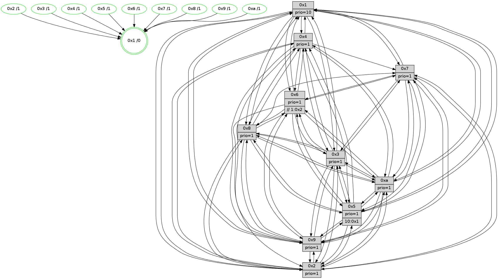

>> << IDX [start] -100 -25 -5 +0 +5 +25 +100 [1470.29286003]
 Previous packets
----------------------------------------------------------------------
1465.564080 beacon01(faad) #0 coord=01,02,03,04,05,06,07,0a,09,08 cycle=688.0ms assoc
-- color-indic=1 64 b5 5c
1465.574061 beacon02(faad) #0 coord=01,02,03,04,05,06,07,0a,09,08 cycle=688.0ms assoc 64 26 6d
1465.584062 beacon03(faad) #0 coord=01,02,03,04,05,06,07,0a,09,08 cycle=688.0ms assoc 64 5c 20
1465.594063 beacon04(faad) #0 coord=01,02,03,04,05,06,07,0a,09,08 cycle=688.0ms assoc 64 2b ca
1465.604062 beacon05(faad) #0 coord=01,02,03,04,05,06,07,0a,09,08 cycle=688.0ms assoc 64 51 87
1465.614063 beacon06(faad) #0 coord=01,02,03,04,05,06,07,0a,09,08 cycle=688.0ms assoc 64 df 50
1465.624065 beacon07(faad) #0 coord=01,02,03,04,05,06,07,0a,09,08 cycle=688.0ms assoc 64 a5 1d
1465.634067 beacon0a(faad) #0 coord=01,02,03,04,05,06,07,0a,09,08 cycle=688.0ms assoc 64 d4 16
1465.654067 beacon08(faad) #0 coord=01,02,03,04,05,06,07,0a,09,08 cycle=688.0ms assoc 64 20 8c
1465.666238 [Hello(10): seq=867 sym=6,2,3,8,7,5,9,4,1 sysInfo=hasWarning stat=6:4,12,7,5/2:1,4,10,1/3:5,7,0,15/8:12,7,9,5/7:4,15,6,10/5:10,7,2,2/9:0,1,7,1/4:8,3,3,3/1:7,0,15,1]
1465.669894 [Hello(9): seq=878 sym=2,5,3,4,7,6,8,10,1 sysInfo=hasWarning stat=2:8,5,7,12/5:9,9,7,9/3:5,8,3,5/4:3,3,15,3/7:0,11,15,5/6:7,8,5,0/8:2,11,15,8/10:4,7,1,0/1:7,14,2,1]
1465.674204 [Color(1) seq=614 @0:0 prio=10]
1465.675550 [Hello(8): seq=878 sym=5,2,3,7,9,6,4,10,1 sysInfo=hasWarning stat=5:1,12,13,2/2:9,9,8,13/3:3,11,12,4/7:3,10,1,0/9:8,13,15,5/6:10,10,7,0/4:2,4,6,2/10:10,13,5,5/1:5,1,2,0]
1465.679023 [Color(8) seq=533 @0:0 prio=1]
1465.680262 [Hello(7): seq=934 sym=2,3,5,6,9,10,1 sysInfo=hasWarning stat=2:14,15,1,5/3:6,7,2,4/5:5,9,3,4/6:7,4,0,12/9:14,6,15,2/10:0,5,8,7/1:13,6,13,0]
1465.682587 [Hello(4): seq=934 sym=5,8,6,2,3,9,7,10,1 sysInfo= stat=5:0,8,15,3/8:0,3,1,0/6:9,1,9,1/2:6,2,2,2/3:7,13,9,15/9:9,6,5,2/7:4,9,2,0/10:14,13,11,14/1:15,13,2,1]
1465.685729 [Color(4) seq=473 @0:0 prio=1]
1465.687426 [Color(7) seq=462 @0:0 prio=1]
----------------------------------------------------------------------
1466.352211 beacon01(faad) #0 coord=01,02,03,04,05,06,07,0a,09,08 cycle=688.0ms assoc
-- color-indic=1 64 71 52
1466.362194 beacon02(faad) #0 coord=01,02,03,04,05,06,07,0a,09,08 cycle=688.0ms assoc 64 e2 63
1466.372193 beacon03(faad) #0 coord=01,02,03,04,05,06,07,0a,09,08 cycle=688.0ms assoc 64 98 2e
1466.382195 beacon04(faad) #0 coord=01,02,03,04,05,06,07,0a,09,08 cycle=688.0ms assoc 64 ef c4
1466.392194 beacon05(faad) #0 coord=01,02,03,04,05,06,07,0a,09,08 cycle=688.0ms assoc 64 95 89
1466.402194 beacon06(faad) #0 coord=01,02,03,04,05,06,07,0a,09,08 cycle=688.0ms assoc 64 1b 5e
1466.412195 beacon07(faad) #0 coord=01,02,03,04,05,06,07,0a,09,08 cycle=688.0ms assoc 64 61 13
1466.422199 beacon0a(faad) #0 coord=01,02,03,04,05,06,07,0a,09,08 cycle=688.0ms assoc 64 10 18
1466.442200 beacon08(faad) #0 coord=01,02,03,04,05,06,07,0a,09,08 cycle=688.0ms assoc 64 e4 82
1466.454071 [Hello(1): seq=844 sym=4,2,9,5,10,3,8,6,7 sysInfo=coloring-mode-on,ColoringModeRequestCalled stat=4:15,2,1,4/2:6,13,12,6/9:12,9,12,2/5:1,7,15,10/10:6,0,0,8/3:13,12,0,11/8:10,15,13,5/6:10,7,12,2/7:11,15,4,2]
1466.457212 [Color(10) seq=524 @0:0 prio=1]
1466.459550 [Color(9) seq=494 @0:0 prio=1]
1466.465000 [Color(2) seq=511 @0:0 prio=1]
1466.466289 [Hello(3): seq=935 sym=1,7,6,2,4,8,9,10,5 sysInfo=hasWarning stat=1:4,1,5,0/7:2,9,5,15/6:7,10,9,3/2:4,7,2,0/4:10,0,8,14/8:11,9,13,7/9:0,14,15,1/10:15,7,4,5/5:2,8,2,2]
1466.469211 [Hello(5): seq=935 sym=7,6,4,3,1,9,8,10,2 sysInfo=hasWarning stat=7:1,15,6,1/6:2,4,0,0/4:8,5,14,0/3:9,0,1,3/1:4,9,9,0/9:6,14,4,11/8:5,13,13,6/10:2,0,10,9/2:11,13,0,8]
1466.472668 [Color(5) seq=471 @0:0 prio=1 >10.@1,1.@2,1.@3,1.@4]
1466.477575 [Color(6) seq=567 @0:0 prio=1 >>1.@2,1.@3,1.@4]
1466.479931 [Color(3) seq=564 @0:0 prio=1]
----------------------------------------------------------------------
1467.140341 beacon01(faad) #0 coord=01,02,03,04,05,06,07,0a,09,08 cycle=688.0ms assoc
-- color-indic=1 64 cd 57
1467.150323 beacon02(faad) #0 coord=01,02,03,04,05,06,07,0a,09,08 cycle=688.0ms assoc 64 5e 66
1467.160322 beacon03(faad) #0 coord=01,02,03,04,05,06,07,0a,09,08 cycle=688.0ms assoc 64 24 2b
1467.170325 beacon04(faad) #0 coord=01,02,03,04,05,06,07,0a,09,08 cycle=688.0ms assoc 64 53 c1
1467.180325 beacon05(faad) #0 coord=01,02,03,04,05,06,07,0a,09,08 cycle=688.0ms assoc 64 29 8c
1467.190324 beacon06(faad) #0 coord=01,02,03,04,05,06,07,0a,09,08 cycle=688.0ms assoc 64 a7 5b
1467.200324 beacon07(faad) #0 coord=01,02,03,04,05,06,07,0a,09,08 cycle=688.0ms assoc 64 dd 16
1467.210329 beacon0a(faad) #0 coord=01,02,03,04,05,06,07,0a,09,08 cycle=688.0ms assoc 64 ac 1d
1467.230329 beacon08(faad) #0 coord=01,02,03,04,05,06,07,0a,09,08 cycle=688.0ms assoc 64 58 87
1467.241870 [Hello(10): seq=868 sym=6,2,3,8,7,5,9,4,1 sysInfo=hasWarning stat=6:5,13,7,5/2:1,5,10,1/3:6,8,0,15/8:13,8,9,5/7:5,0,6,10/5:11,8,2,2/9:1,2,7,1/4:9,4,3,3/1:8,1,15,1]
1467.246023 [STC(1) #0.257 tree-change,inconsistent-stability,stable,to-color d=0]
1467.247241 [Hello(4): seq=935 sym=5,8,6,2,3,9,7,10,1 sysInfo= stat=5:1,9,15,3/8:0,3,1,0/6:9,2,9,1/2:7,3,2,2/3:8,14,9,15/9:9,7,5,2/7:4,10,2,0/10:15,14,11,14/1:0,13,2,1]
1467.249653 [Hello(8): seq=879 sym=5,2,3,7,9,6,4,10,1 sysInfo=hasWarning stat=5:2,13,13,2/2:9,10,8,13/3:4,12,12,4/7:4,11,1,0/9:8,14,15,5/6:11,11,7,0/4:3,5,6,2/10:11,14,5,5/1:6,1,2,0]
1467.252812 [Color(8) seq=534 @0:0 prio=1]
1467.254573 [Color(1) seq=615 @0:0 prio=10]
1467.256665 [Hello(9): seq=879 sym=2,5,3,4,7,6,8,10,1 sysInfo=hasWarning stat=2:9,6,7,12/5:10,10,7,9/3:6,9,3,5/4:4,4,15,3/7:1,12,15,5/6:7,9,5,0/8:3,12,15,8/10:4,7,1,0/1:8,15,2,1]
1467.261590 [Hello(7): seq=935 sym=2,3,5,6,9,10,1 sysInfo=hasWarning stat=2:14,0,1,5/3:7,8,2,4/5:6,10,3,4/6:8,5,0,12/9:14,7,15,2/10:1,6,8,7/1:14,6,13,0]
1467.265105 [Color(7) seq=463 @0:0 prio=1]
1467.268591 [Color(4) seq=474 @0:0 prio=1]
----------------------------------------------------------------------
1467.928471 beacon01(faad) #0 coord=01,02,03,04,05,06,07,0a,09,08 cycle=688.0ms assoc
-- color-indic=1 64 19 62
1467.938454 beacon02(faad) #0 coord=01,02,03,04,05,06,07,0a,09,08 cycle=688.0ms assoc 64 8a 53
1467.948454 beacon03(faad) #0 coord=01,02,03,04,05,06,07,0a,09,08 cycle=688.0ms assoc 64 f0 1e
1467.958455 beacon04(faad) #0 coord=01,02,03,04,05,06,07,0a,09,08 cycle=688.0ms assoc 64 87 f4
1467.968453 beacon05(faad) #0 coord=01,02,03,04,05,06,07,0a,09,08 cycle=688.0ms assoc 64 fd b9
1467.978454 beacon06(faad) #0 coord=01,02,03,04,05,06,07,0a,09,08 cycle=688.0ms assoc 64 73 6e
1467.988455 beacon07(faad) #0 coord=01,02,03,04,05,06,07,0a,09,08 cycle=688.0ms assoc 64 09 23
1467.998460 beacon0a(faad) #0 coord=01,02,03,04,05,06,07,0a,09,08 cycle=688.0ms assoc 64 78 28
1468.018460 beacon08(faad) #0 coord=01,02,03,04,05,06,07,0a,09,08 cycle=688.0ms assoc 64 8c b2
1468.031330 [Hello(1): seq=845 sym=4,2,9,5,10,3,8,6,7 sysInfo=coloring-mode-on,ColoringModeRequestCalled stat=4:0,3,1,4/2:6,14,12,6/9:13,10,12,2/5:2,8,15,10/10:7,1,0,8/3:14,13,0,11/8:10,15,13,5/6:11,8,12,2/7:12,0,4,2]
1468.034056 [Color(9) seq=495 @0:0 prio=1]
1468.039162 [Hello(3): seq=936 sym=1,7,6,2,4,8,9,10,5 sysInfo=hasWarning stat=1:5,2,6,0/7:3,10,5,15/6:7,10,9,3/2:4,7,2,0/4:11,1,8,14/8:11,10,13,7/9:1,14,15,1/10:0,8,4,5/5:2,8,2,2]
1468.044316 [Color(2) seq=512 @0:0 prio=1]
1468.046596 [STC(3)->1 #0.257 tree-change,inconsistent-stability,stable,to-color d=1]
1468.049180 [STC(6)->1 #0.257 tree-change,inconsistent-stability,stable,to-color d=1]
1468.050815 [TreeStatus(6)-.->1 #0.257 tree-change,inconsistent-stability,stable child=1]
1468.052372 [STC(10)->1 #0.257 tree-change,inconsistent-stability,stable,to-color d=1]
1468.054134 [TreeStatus(3)-.->1 #0.257 tree-change,inconsistent-stability,stable child=1]
1468.057202 [STC(5)->1 #0.257 tree-change,inconsistent-stability,stable,to-color d=1]
1468.058430 [Color(10) seq=525 @0:0 prio=1]
1468.060843 [Color(5) seq=472 @0:0 prio=1 >10.@1,1.@2,1.@3,1.@4]
1468.065662 [Color(3) seq=565 @0:0 prio=1]
1468.068275 [Color(6) seq=568 @0:0 prio=1 >>1.@2,1.@3,1.@4]
----------------------------------------------------------------------
1468.716601 beacon01(faad) #0 coord=01,02,03,04,05,06,07,0a,09,08 cycle=688.0ms assoc
-- color-indic=1 64 a5 67
1468.726585 beacon02(faad) #0 coord=01,02,03,04,05,06,07,0a,09,08 cycle=688.0ms assoc 64 36 56
1468.736584 beacon03(faad) #0 coord=01,02,03,04,05,06,07,0a,09,08 cycle=688.0ms assoc 64 4c 1b
1468.746584 beacon04(faad) #0 coord=01,02,03,04,05,06,07,0a,09,08 cycle=688.0ms assoc 64 3b f1
1468.756583 beacon05(faad) #0 coord=01,02,03,04,05,06,07,0a,09,08 cycle=688.0ms assoc 64 41 bc
1468.766585 beacon06(faad) #0 coord=01,02,03,04,05,06,07,0a,09,08 cycle=688.0ms assoc 64 cf 6b
1468.776588 beacon07(faad) #0 coord=01,02,03,04,05,06,07,0a,09,08 cycle=688.0ms assoc 64 b5 26
1468.786588 beacon0a(faad) #0 coord=01,02,03,04,05,06,07,0a,09,08 cycle=688.0ms assoc 64 c4 2d
1468.806590 beacon08(faad) #0 coord=01,02,03,04,05,06,07,0a,09,08 cycle=688.0ms assoc 64 30 b7
1468.818423 [Hello(9): seq=880 sym=2,5,3,4,7,6,8,10,1 sysInfo=hasWarning stat=2:10,7,7,12/5:10,11,8,9/3:7,10,4,6/4:4,5,15,3/7:2,13,15,5/6:7,10,6,1/8:3,12,15,8/10:4,8,2,0/1:9,15,2,1]
1468.821154 [Hello(10): seq=869 sym=6,2,3,8,7,5,9,4,1 sysInfo=hasWarning stat=6:5,14,7,5/2:1,5,10,1/3:6,9,0,15/8:13,9,9,5/7:6,1,6,10/5:11,9,2,2/9:2,2,7,1/4:10,5,3,3/1:9,2,0,1]
1468.824201 [Hello(4): seq=936 sym=5,8,6,2,3,9,7,10,1 sysInfo= stat=5:1,10,0,3/8:1,3,1,0/6:9,3,10,2/2:7,4,3,2/3:9,15,10,0/9:9,8,5,2/7:4,10,2,0/10:0,15,12,14/1:1,13,2,1]
1468.827682 [Color(4) seq=475 @0:0 prio=1]
1468.831825 [Hello(8): seq=880 sym=5,2,3,7,9,6,4,10,1 sysInfo=hasWarning stat=5:2,14,14,2/2:9,11,9,13/3:5,13,13,5/7:5,12,1,0/9:9,15,15,5/6:11,12,8,1/4:3,6,6,2/10:12,15,6,5/1:7,2,2,0]
1468.835489 [Hello(7): seq=936 sym=2,3,5,6,9,10,1 sysInfo=hasWarning stat=2:14,1,2,5/3:8,9,3,5/5:6,11,4,4/6:9,6,1,13/9:14,8,15,2/10:2,7,9,7/1:15,6,13,0]
1468.839895 [Color(8) seq=535 @0:0 prio=1]
1468.842763 [Color(1) seq=616 @0:0 prio=10]
1468.844900 [Color(7) seq=464 @0:0 prio=1]
----------------------------------------------------------------------
1469.504731 beacon01(faad) #0 coord=01,02,03,04,05,06,07,0a,09,08 cycle=688.0ms assoc
-- color-indic=1 64 61 69
1469.514713 beacon02(faad) #0 coord=01,02,03,04,05,06,07,0a,09,08 cycle=688.0ms assoc 64 f2 58
1469.524714 beacon03(faad) #0 coord=01,02,03,04,05,06,07,0a,09,08 cycle=688.0ms assoc 64 88 15
1469.534714 beacon04(faad) #0 coord=01,02,03,04,05,06,07,0a,09,08 cycle=688.0ms assoc 64 ff ff
1469.544714 beacon05(faad) #0 coord=01,02,03,04,05,06,07,0a,09,08 cycle=688.0ms assoc 64 85 b2
1469.554714 beacon06(faad) #0 coord=01,02,03,04,05,06,07,0a,09,08 cycle=688.0ms assoc 64 0b 65
1469.564715 beacon07(faad) #0 coord=01,02,03,04,05,06,07,0a,09,08 cycle=688.0ms assoc 64 71 28
1469.574719 beacon0a(faad) #0 coord=01,02,03,04,05,06,07,0a,09,08 cycle=688.0ms assoc 64 00 23
1469.594720 beacon08(faad) #0 coord=01,02,03,04,05,06,07,0a,09,08 cycle=688.0ms assoc 64 f4 b9
1469.605979 [Hello(1): seq=846 sym=4,2,9,5,10,3,8,6,7 sysInfo=coloring-mode-on,ColoringModeRequestCalled stat=4:0,3,1,4/2:6,15,12,6/9:14,11,12,2/5:2,9,0,10/10:7,2,1,8/3:15,14,1,12/8:10,15,13,5/6:12,9,13,3/7:12,1,4,2]
1469.610191 [Hello(5): seq=937 sym=7,6,4,3,1,9,8,10,2 sysInfo=hasWarning stat=7:3,1,6,1/6:2,6,0,0/4:10,7,14,0/3:9,2,1,3/1:6,11,10,0/9:8,14,4,11/8:6,15,13,6/10:4,1,10,9/2:11,13,0,8]
1469.612744 [Color(10) seq=526 @0:0 prio=1]
1469.614916 [Hello(2): seq=933 sym=4,5,7,3,9,8,10,1 sysInfo=hasWarning stat=4:5,14,1,14/5:13,6,6,3/7:4,13,3,2/3:14,11,6,2/9:3,0,12,10/8:1,11,12,14/10:2,11,14,11/1:0,7,14,0]
1469.619540 [Color(2) seq=513 @0:0 prio=1]
1469.620951 [Hello(6): seq=937 sym=3,2,5,4,7,9,8,10,1 sysInfo=hasWarning stat=3:10,7,7,0/2:2,6,2,0/5:0,15,10,5/4:7,10,1,9/7:15,14,13,0/9:8,0,3,11/8:6,4,8,8/10:9,8,12,13/1:9,8,2,1]
1469.625356 [Color(6) seq=569 @0:0 prio=1 >>1.@2,1.@3,1.@4]
1469.627029 [Color(9) seq=496 @0:0 prio=1]
1469.628683 [Color(5) seq=473 @0:0 prio=1 >10.@1,1.@2,1.@3,1.@4]
1469.634700 [Hello(3): seq=937 sym=1,7,6,2,4,8,9,10,5 sysInfo=hasWarning stat=1:6,3,6,0/7:4,11,5,15/6:7,11,9,3/2:4,7,2,0/4:12,2,8,14/8:12,11,13,7/9:2,15,15,1/10:1,8,4,5/5:2,8,2,2]
1469.639124 [Color(3) seq=566 @0:0 prio=1]